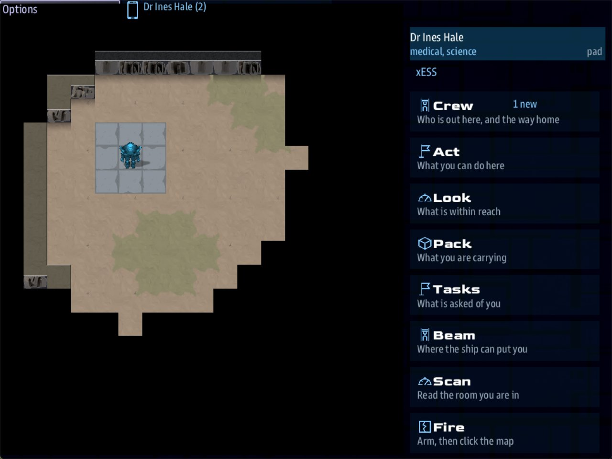

Class 3, Lecture 13 - What the crew sees¶
What you will have at the end¶
The same mission, read from the other side of the screen.
For six lectures you have written records. Your crew never sees a record. They see a
handheld with eight apps, and each app is made of your words: a heading here, a key
there, a title after the words Go to. Some of those words you chose with care. Some
you typed in a hurry as a name for yourself, and they are on the screen too.
Today you go through the handheld one app at a time, find what reads badly in MyAway,
and fix it. You also give the two crew members with nothing to do something to do.

Dr Hale's handheld just after she beams down to the pad: the first screen is the list of eight apps.The screens on this page were played on the game itself. A few numbers come from the game's code and were not counted on a screen, and the page says so where they come up.
You change four files: mission.amd and the three maps.
The video¶
About 6 minutes. Subtitles are available in the player.
Before you start¶
MyAwayas Lecture 12 left it.sbs lint MyAwaysaysclean.- A command prompt open in
C:\Cosmos\data\missions.
Words for this lecture:
| Word | Meaning |
|---|---|
| Handheld | What a console becomes when its crew member beams down |
| App | One row of the handheld's first screen: Crew, Act, Look, Pack, Tasks, Beam, Scan, Fire |
| Bar | The line that is always there: your name, your jobs, and where you are |
| Covering | Offered a choice that belongs to a job you do not have |
Step 1 - Read the screen¶
Type nothing in this step. Read what your mission puts on the handheld today.
The bar¶
Three things, always there. This is Dr Hale in the first second on the ground:
Her name and her jobs come from your roster: the heading, and the Roles: line. The
third word is where she is standing, and it is the name of a mark in your map file.
Hold that thought until Step 2.
When she is hurt the bar says so, and when she is down it says nothing else:
Dr Ines Hale | medical, science | Kesh Relay - HP 2/3
Dr Ines Hale | medical, science | DOWN - needs a medkit
The eight apps¶
The handheld's first screen is a list: one full-width row for each app, its name and one line under it. They are the same in every mission:
Crew | Who is out here, and the way home
Act | What you can do here
Look | What is within reach
Pack | What you are carrying
Tasks | What is asked of you
Beam | Where the ship can put you
Scan | Read the room you are in
Fire | Arm, then click the map
Here is what each one lists, and which of your words it uses.
| App | What it lists | Your words in it |
|---|---|---|
| Crew | The ship, each person on the ground and where they stand, Everyone. For the one you pick: jobs, place, health, the last thing they said. Buttons: Report in, Beam up, Call and a name, Call for help |
The title on the card, roster names, Roles:, mark names |
| Act | The scene that is open: every line so far, then your choices | Every % line and every choice |
| Look | Things in reach, as Use and a name, or Talk to and a name. Ways out, as Go to and an area's title. Then Further off: up to four things in sight. Then the last thing that happened to you |
Prop and person headings, area titles |
| Pack | What you carry, as an item and a count. Use medkit. Give to and a name, for somebody standing next to you |
Item keys |
| Tasks | A list: your own side story, then the party's quests, each a heading and a state. Under it, the page of the one you pick: its state, its objective, its text. Then Leads: what each quest points at and where |
Quest headings, Objective:, the text, Leads to:, area titles |
| Beam | To and an area's title, for each other area the ship can put you in. Never the one you are in: on the pad at the start it says No other site has a lock yet. |
Area titles |
| Scan | The place you stand, then everything in sight with its Scan: line |
Mark names, area titles, headings, Scan: lines |
| Fire | SAFE or ARMED, three settings, what the chosen one does, Arm or Make safe |
None |
Two of those numbers were read from the game's code and not counted on a screen: Look shows at most six things in reach and four further off, and Tasks shows at most four leads.
A Further off row is a button, and pressing it walks you straight to that thing. The
walk goes round walls, not round a hostile: a crew member pressed one in the yard and
was downed walking through the sentry's square.
Not every console has all eight. A console in a party of rooms, like Lecture 6's, has Crew and Act, and Tasks if its person holds a story. Look, Pack, Beam, Scan and Fire need a map to stand on.
Act is a transcript¶
Act does not show one room. It keeps everything this console has read, in order. Here is the end of Dr Hale's Act app after a talk with Marrow and two pickups. His long line is cut short here:
Dr Ines Hale
[Ask what he has put by]
He nods at the scrub beside the landing pad. "Medical kit, under the netting. ..."
Dr Ines Hale picked up Medical kit.
Dr Ines Hale picked up Pump house key.
~ ~ ~
The conversation is over.
Dr Ines Hale picked up Toolbox (fuse x2).
So a pickup is named by the prop's heading, the words the crew saw on the map, and the
prop is gone from the map once it is picked up. When the heading does not say how many,
the count follows in round brackets, in the pack's words: Toolbox (fuse x2). The pack
itself says pump key x1 and fuse x2, the item's key. One thing, two names. That is
Step 4.
Who is offered what¶
All of this was played with stand-in consoles on your Lecture 12 files.
| What you wrote | Who gets it |
|---|---|
A choice with no if |
Everybody in the scene |
if medical |
The medic, when she is in the scene |
if medical, and nobody in the scene is a medic |
One person in the scene, with (covering for medical) after the words |
if skill science >= 3 |
Only somebody that good. Nobody covers for a skill |
if holding fuse >= 3 |
Only the one carrying them |
Needs: engineering on a prop |
Anybody else is told You would need engineering for that. |
For: medical on a side story |
Her Tasks app, and nobody else's. It is not on the ship's quest list |
The third row has a surprise in it. Covering is worked out scene by scene. Lt Ross walked up to Marrow alone, while Dr Hale stood on the landing pad six cells away. Ross was offered the medic's answer, last of the five:
Dr Hale was on the ground, and not beside him, so she was not in his scene. The answer is covered whenever the medic is not standing with Marrow.
So a choice for a job is never out of reach because the right person is busy elsewhere. If only a medic's hands will do, ask for a skill, not a job.
A scene opens for the one who clicked. With a prop's scene, a crew member standing within two cells is brought into it as well. That last sentence is from the game's code; the play showed it once, with two people at the terminal.
Somebody with no job here¶
Now look at the mission as Lt Ross, your helm officer. Her Tasks app:
Party
Relight Kesh Relay
Active
Hold at the Relay
Done
State Active
Light the beacon at Kesh Relay
The relay's beacon went dark nine days ago. Go down and light it.
Leads
! The beacon - Kesh Relay
No story of her own. At Marrow she gets the answers everybody gets, and one she is covering. At the pump panel she is refused. Ens Vale at the terminal is the same: his science is 2, so the door code is not even offered. Two of your five crew members have come down to watch. That is Step 7.
Step 2 - A mark is a word on the bar¶
The bar said pad. That is the mark @pad in landing.tiles. Any mark a crew member
can stand on is a word on their bar, in the Crew app beside their name, and at the top
of Scan. An underscore is shown as a space.
Now walk Dr Hale across your three maps, and read the bar on four more marks. A mark
shows only while somebody stands ON its cell. The cell a person lands on when they walk
into an area reads the area's title (The Dry Gully). One step further, onto the
mark's own cell, and the bar reads the mark:
Dr Ines Hale | medical, science | post
Dr Ines Hale | medical, science | yard
Dr Ines Hale | medical, science | arrive
Dr Ines Hale | medical, science | foot
post and yard came with the starter, and they are places. arrive and foot are
yours, from Lectures 8 and 9. You typed them as names for yourself, and they have been
on screen ever since.
Name a mark for the place, the way you would say it. Open ground\landing.tiles
(press Text in the editor). Change two lines:
In ground\gully.tiles:
In ground\cistern.tiles:
The gully names that last mark too, as the place its stairs come out. In
ground\gully.tiles, under exits::
Save the three files and run lint. It says clean. Played again, on the pad and one step
into the gully, the bar reads:
A mark never gives a hidden thing away. Two of your marks have something hidden on
them: @scrub, where the medical kit lies until Marrow speaks of it, and @crate,
where the spare cell waits for the tank to drain. The game does not show a mark like
that. This is Dr Hale standing on the kit's cell before anybody has asked Marrow:
The area's title, and nothing more. A cell with no mark at all reads the same way. Once
Marrow has told of the kit, the same cell reads scrub, and stepping onto it picks the
kit up: Act says Dr Ines Hale picked up Medical kit. and the cell is empty. So you may
put a hidden thing on a mark. Name the mark for the place all the same, because it is on the bar from the
moment the thing is found.
Marks under a thing that blocks, like door and tent, are never stood on. Leave them.
Step 3 - A title is read after "Go to"¶
An area's title: is used in five places. Here are three of them, from your Lecture 12
files:
The first is a button in Look and the second a button in Beam. Both put a word in front
of your title, so a title that starts with The reads badly twice.
The third is a lead in Tasks. Once the party has found the area, the lead ends with the area's title. The other two places are the bar and the top of Scan, when nobody is on a mark.
In gully.tiles and cistern.tiles, change the two titles:
Played again:
Look only lists a way out to an area the party knows. Your gully is known: no, so
until somebody has walked east there is no Go to button for it, and the trail sign is
the only thing that says it is there. That is by design. Know that it is so.
Step 4 - What you pick up, and what the pack calls it¶
A prop you pick up is on screen under two names: its heading, and its Item: key.
| Where | What it showed |
|---|---|
| Look | Use Brittle notice, Use Pump house door |
| Further off | ? Pump house key - 5 E |
| Act | Dr Ines Hale picked up Pump house key. |
| Pack | fuse x2, pump key x1 |
| At the door | pump key fits |
| Handing over | Handed over medkit. |
Look, Further off and Act say the heading, Pump house key. The pack and the door say
pump key, because that is the item's key with its underscore turned into a space. So
she picks up a Pump house key and is carrying a pump key. To your crew those are two
different things.
Make the item's key the same words as the heading. Three lines name the pump house key, and all three must change together. In the Pump house key record:
In the Pump house door record:
And in Marrow's scene:
The relay keycard has the same fault. In the Relay keycard record:
In the Relay door record:
The note above the keycard record names the old key too. Change it to match.
Name a pickup for what ends up in the pack. Until somebody picks it up, the heading
is all the crew has: a ? Toolbox row under Look's Further off, and Toolbox in Scan,
say where to walk and not what is there. And it is the heading Act says once they do.
Change two headings:
Only the words in square brackets change. The keys stay, because other lines join to them.
Save and run lint: clean. Played again:
Dr Ines Hale picked up Pump house key.
Dr Ines Hale picked up Two fuses.
pump house key x1
pump house key fits
relay keycard fits
When the heading and the item's key are the same words, Act and the pack name the thing
the same way: Pump house key, pump house key x1. Two fuses and fuse x2 agree
too, and because the heading already says how many, Act adds no count after it.
Miss one of the three lines and lint tells you: nothing in the mission gives the old key any more. Step 10 has the warning.
Step 5 - Scenery still gets scanned¶
In Lecture 10 you learned that a prop with no words is scenery, and nothing offers to use it. Scan does not know that. This is the yard through Scan, on your Lecture 12 files:
Kesh Relay
**Tent** - no reading
**Pump house key** - A brass key on a loop of wire, hung on a tent peg.
**Medical kit** - A sealed medical kit under camouflage netting.
**Old Marrow** - One human. Elevated pulse, and a wet cough.
Scan lists everything in sight: scenery, pickups and people. The medical kit is on the
list because Marrow had already told of it; before that it is not there at all. For each
thing it shows the Scan: line. With no Scan: line it shows the description, and with
neither it says no reading.
A Scan: line does not stop a prop being scenery. Give your three pieces of scenery
one each. In the Tent record, under Blocks: yes:
In The pump record:
In the Crate record:
Played again from the gully mouth:
**Crate** - Empty. Somebody has been using it as a seat.
**Pim** - One human, young. Cold, and not hurt.
A Scan: line is the cheapest clue you have. It costs the crew no walking. Use it to
say what a thing is for before they cross the map to find out.
Step 6 - In the list, a heading is the whole task¶
Open Dr Hale's Tasks app:
Dr Ines Hale
The Caretaker's Cough
Active
Party
State Active
See to the caretaker
The man who kept the relay has been breathing its dust for nine days.
Leads
! Old Marrow - Kesh Relay
! The beacon - Kesh Relay
The top is a list, and each quest in it is a heading and a state. The page under it,
with the objective and the text, is for the one quest picked in the list. The ship's
Quest Log is built the same way. So the heading is what the crew reads first, and with
several quests in the list it is all they read. Make the heading the instruction.
Change three headings in mission.amd. The keys stay as they are:
Clear the Yard already says what to do. Leave it.
One more thing about Leads to:. The lead is shown from the moment the quest is, and
it names its target at once. Chief Okoro reads ! Sump crawler in the first second on
the ground, before anybody knows there is a cistern. If the name is the surprise, leave
Leads to: off that story.
Step 7 - The two with nothing to do¶
Give Lt Ross and Ens Vale a story each, and an answer that finishes it. You know every word of this from Lecture 5.
In the Side Stories section, under the last line of the engineer's story, leave a blank line and add:
### [Find a Place to Set Down](strip)
---
For: helm
Starts when: at once
Objective: Ask the caretaker where a shuttle could land
Done when: signal strip_found
Leads to: marrow
---
If the beacon cannot be lit, somebody will have to fly a new one down.
### [Hear the Last Call](last_call)
---
For: comms
Starts when: at once
Objective: Find out who the relay spoke to last
Done when: signal last_call_heard
Leads to: terminal
---
A relay does not go dark without telling somebody first.
Lint warns twice, unfired-signal, and it is right: nothing sends either signal yet.
In Old Marrow, under the brass key line, add:
and above The Keycard, add the room:
### [The Old Strip](marrow_strip)
% "South of the pad, where the scrub is flat. The supply boats used it before my time." He looks pleased that somebody asked.
- [Ask him something else](marrow)
- [Thank him]()
In The Yard Terminal, under the recognition update line, add:
and above Nine Days, add the room:
### [The Last Call](terminal_call)
% One call, nine days old, to a convoy tender that never answered: CELL FAILING. SEND A SPARE. The relay asked for help once, and then saved its power.
- [Step back](terminal)
Save and run lint: clean. Lt Ross's Tasks app now starts:
Lt Dana Ross
Find a Place to Set Down
Active
Party
State Active
Ask the caretaker where a shuttle could land
If the beacon cannot be lit, somebody will have to fly a new one down.
and after her answer it says Done.
These are jobs, so they are covered. When Dr Hale talked to Marrow alone she was
offered Ask where a shuttle could set down, marked as covering for helm. Taking it
sends the story's signal, whoever pressed. That is the price of using a job, and it is
why the party can never be stuck.
Step 8 - How long is a line¶
One length has been seen on the game: Look at that cough (covering for medical), 41
characters, fits on one line in Act. Past that, what can be measured is what the shipped
missions do, so count yours against them.
| Counted | The starter | Yours, now | Dawnline |
|---|---|---|---|
| Choices | 28 | 64 | 148 |
| A choice, middle length | 19 characters | 20 | 16 |
| Nine choices in ten are under | 35 characters | 35 | 29 |
| The longest choice | 39 | 44 | 50 |
A % line, middle length |
27 words | 27 words | 23 words |
The longest % line |
37 words | 38 words | 74 words |
| A heading, middle length | 11 characters | 12 | 12 |
Three things to plan with:
- A choice that is covered grows by
(covering for medical)and the like: up to 27 more characters on your longest job word. (From the game's code.) - The Act app shows the whole transcript and scrolls. A long line wraps onto more lines; it is never cut off. It is only read less.
- In Act your choices are buttons at the end of the transcript, one under another, each as wide as its words.
So keep to the starter's numbers until you have seen your own mission on a screen: a
choice under 35 characters, a line under 40 words. Your longest choice is 44 characters,
Fit two, and bridge the third clip with wire. It is on a prop that needs an engineer,
so it is never covered. Leave it, and look at it first when you play.
Step 9 - What the bridge sees¶
Somebody stays aboard. Here is all of it.
On the ship's tablet, the Boarding Party screen lists who has gone. This is Lt Ross, back aboard, with Dr Hale still down:
Boarding Party Kesh Relay
Going down to Kesh Relay
Lt Dana Ross helm
In the party
Dr Ines Hale medical, science
BEAM DOWN
The ship's quest log shows the shared quests, and nothing of anybody's side story:
Pim's quest joins that list when an answer starts it, and not before.
And Messages gets a line only when somebody on the ground presses Report in, in their Crew app:
Dr Ines Hale
Dr Ines Hale, reporting in.
* Sam
The cat has opinions
* Mum
Are you eating
* Mum
Nan says hello
The rows under it are the crew's mail from home. They come with the game, not with your mission. The reporting-in line is the only one of yours.
That is everything. No scene line reaches the bridge. So the shared quests are the bridge's only window on the ground. Every time one starts or finishes, the bridge learns something. Lecture 16 builds a quest tree with that in mind.
Give the bridge something to read¶
Select a quest in that list and the Quest Log shows its description beside it, in full.
The starter's is one sentence. For the people who never beam down, it is the whole
briefing. Give it a page. In Relight Kesh Relay, replace the line under the closing
--- with:
 Kesh Relay, the only light on the Kesh run.
The relay's beacon went dark nine days ago. Go down and light it.
| What | What the ship knows |
|---|---|
| The beacon | Dark for nine days. No power in the lamp |
| The caretaker | Old Marrow. Not answering hails |
| The yard | A security frame on patrol. It answers to nobody now |
Every convoy on the Kesh run steers by that lamp. Until it is lit, they fly blind.
You know every piece of it from Classes 1 and 2: a ship lead line, paragraphs, a table.
starbase_civil is the hull story.mast gives the relay, so the picture is the station
the ship is holding beside. The table says only what the ship could know from up there.
Nothing in it gives away a scene.
The side stories are a different matter. Their words under the fence are on one screen only, the page under the owner's Tasks list, on the ground. Nobody aboard reads them, so leave them short.
Step 10 - Check it¶
Each row was tried on the finished files, one change at a time.
| The mistake | What lint says |
|---|---|
The mark renamed in the legend, entry: left as it was |
tiles-entry, an error |
The mark renamed in the legend, the record still says Mark: scrub |
tiles-unknown-mark: it is never placed |
The mark renamed in the cistern, the gully's exits: line left |
tiles-exit |
Scann: for Scan: |
unknown-field. It guesses Scan |
For: helmsman |
for-nobody. It lists every word that would work |
The answer sends strip_fond |
unfired-signal on the story, signal-no-route on the answer |
The item renamed on the pickup, and the door still says key pump_key |
item-nothing-gives, on the door. In the game the key does not open it: the door goes straight to its skill check, and says nothing about a key |
The item renamed on the pickup, and Marrow's line still says if party pump_key |
item-nothing-gives, on the choice. Show him the brass key is offered to nobody |
Item: pump house key, with spaces |
item-nothing-gives, on the door and on Marrow's line. The pack shows pump house key x1, and it opens nothing |
Four of those, as lint printed them:
[WARNING] line 297: `Opens with: key pump_key` - nothing in this mission gives anybody `pump_key`: no pickup has `Item: pump_key`, nobody `Drops:` one and no answer says `; give pump_key`. So this door never opens with a key. Check the spelling against the `Item:` line of the thing you mean. Given in this mission: fuse, medkit, power_cell, pump_house_key, relay_keycard, tablet (item-nothing-gives)
What lint cannot see¶
None of these is a mistake lint could know about. They are choices of words.
| The words | What the crew reads |
|---|---|
| A mark named for yourself | arrive, on the bar of anybody who stands there |
A title that starts with The |
Go to The Dry Gully |
| An item key that is not the heading's words | picked up Pump house key. in Act, then pump key x1 in the pack |
| A choice too long to read at a glance | Nobody has measured where it stops fitting |
After any rename, run lint, and then search the file for the old word. In VS Code, Ctrl+F, type the old key, and look at every line it finds.
Step 11 - Play it¶
This time do not play to win. Play to read.
- All three beam down. On each console, open every app on the list once and press Back.
- Read the bar. Walk off the pad and read it again.
- As Lt Ross, open Tasks, then talk to Marrow. Find her answer.
- As Ens Vale, walk to the terminal and find his answer. Every cell beside the terminal is within the sentry's notice, so it will come for him. Stun it first from the Fire app (a stun lasts about ten seconds), then read fast. Shots miss a lot, and no app tells you a shot hit or missed.
- As Dr Hale, pick up the brass key by the tent. Open Pack, then Act.
- Open Scan in the yard. Then walk east into the gully by the path behind the relay
house, as in Lecture 9, and open Look. Press only the row you mean: a
Further offrow walks you there, sentry or no sentry. - On a console left aboard (a fourth one, or one that has pressed Beam up), open the handheld's Boarding Party and Quests.
Write down every word that makes you wince. That list is your exercise.
If something goes wrong¶
| What you see | Why | What to do |
|---|---|---|
Lint says tiles-entry |
You renamed a mark and not the entry: line above it |
Make the two match |
Lint says tiles-exit |
The gully's exits: line still names the old mark in the cistern |
Step 2 |
| The brass key no longer opens the pump house | The door's Opens with: still has the old item key |
Step 4. Lint says item-nothing-gives |
A story is Done and its owner never touched it |
Somebody else took the answer as covering | Step 7. Use if skill if only one person may |
Exercise¶
- Stand on the cell where the medical kit is hidden, before and after you ask Marrow about it. Read the bar both times. The second time, read Act too: the step picked the kit up.
- Read every prop heading in your file after the word
Use, and after the wordspicked up, then the same prop's line in the pack. Change the ones that jar, or that name one thing two ways. - Read every
Scan:line. Each should tell the crew something they could not see. Rewrite two. - Find your three longest choices. Can each lose five words and keep its meaning?
- Break it and read lint:
entry: pad; the mark on thehline renamed;Item: pump_keyon the key only. Lint has a different thing to say about each.
Then answer on paper, from the file alone:
- Which words in your file are on the bar at some time? List the marks.
- A party of Lt Ross and Ens Vale. Which answers are they covering, and for whom?
- What does the bridge learn, and when, if nobody presses Report in?
Checkpoint¶
You are done when all five are true:
sbs lint MyAwaysaysclean.- Every mark that can be stood on is named for its place.
- The pack, the door and the heading use the same words for each key.
- Every crew member on your roster has a story or an answer of their own.
- You can say which of your words each of the eight apps shows.
Next¶
Lecture 14 puts a clock on this mission. It measures how long everything takes, and checks by hand that every party can reach every ending.
Further reading¶
Nothing here is needed for Lecture 14.
- "Boarding parties" in the library documentation: "Where the crew reads it".
- "Ground tile maps" in the library documentation: the table of fields under "Placing things on the ground", and the paragraph on scenery.
- "The ePADD" in the library documentation, if you want to know how the ship's tablet is put together. You do not need it to write a mission.
Download this lecture's finished files (a zip of its example folder).